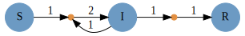

Catalyst.jl for Reaction Network Modeling
Catalyst.jl is a symbolic modeling package for analysis and high performance simulation of chemical reaction networks. Catalyst defines symbolic ReactionSystems, which can be created programmatically or easily specified using Catalyst's domain specific language (DSL). Leveraging ModelingToolkit.jl and Symbolics.jl, Catalyst enables large-scale simulations through auto-vectorization and parallelism. Symbolic ReactionSystems can be used to generate ModelingToolkit-based models, allowing the easy simulation and parameter estimation of mass action ODE models, Chemical Langevin SDE models, stochastic chemical kinetics jump process models, and more. Generated models can be used with solvers throughout the broader SciML ecosystem, including higher level SciML packages (e.g. for sensitivity analysis, parameter estimation, machine learning applications, etc).
Features
- A DSL provides a simple and readable format for manually specifying chemical reactions.
- Catalyst
ReactionSystems provide a symbolic representation of reaction networks, built on ModelingToolkit.jl and Symbolics.jl. - Non-integer (e.g.
Float64) stoichiometric coefficients are supported for generating ODE models, and symbolic expressions for stoichiometric coefficients are supported for all system types. - The Catalyst.jl API provides functionality for extending networks, building networks programmatically, network analysis, and for composing multiple networks together.
ReactionSystems generated by the DSL can be converted to a variety ofModelingToolkit.AbstractSystems, including symbolic ODE, SDE and jump process representations.- Coupled differential and algebraic constraint equations can be included in Catalyst models, and are incorporated during conversion to ODEs or steady state equations.
- Conservation laws can be detected and applied to reduce system sizes, and generate non-singular Jacobians, during conversion to ODEs, SDEs, and steady state equations.
- By leveraging ModelingToolkit, users have a variety of options for generating optimized system representations to use in solvers. These include construction of dense or sparse Jacobians, multithreading or parallelization of generated derivative functions, automatic classification of reactions into optimized jump types for Gillespie type simulations, automatic construction of dependency graphs for jump systems, and more.
- Generated systems can be solved using any DifferentialEquations.jl ODE/SDE/jump solver, and can be used within
EnsembleProblems for carrying out parallelized parameter sweeps and statistical sampling. Plot recipes are available for visualizing the solutions. - Symbolics.jl symbolic expressions and Julia
Exprs can be obtained for all rate laws and functions determining the deterministic and stochastic terms within resulting ODE, SDE or jump models. - Latexify can be used to generate LaTeX expressions corresponding to generated mathematical models or the underlying set of reactions.
- Graphviz can be used to generate and visualize reaction network graphs. (Reusing the Graphviz interface created in Catlab.jl.)
Packages Supporting Catalyst
- Catalyst
ReactionSystems can be imported from SBML files via SBMLToolkit.jl, and from BioNetGen .net files and various stoichiometric matrix network representations using ReactionNetworkImporters.jl. - MomentClosure.jl allows generation of symbolic ModelingToolkit
ODESystems, representing moment closure approximations to moments of the Chemical Master Equation, from reaction networks defined in Catalyst. - FiniteStateProjection.jl allows the construction and numerical solution of Chemical Master Equation models from reaction networks defined in Catalyst.
- DelaySSAToolkit.jl can augment Catalyst reaction network models with delays, and can simulate the resulting stochastic chemical kinetics with delays models.
- BondGraphs.jl a package for constructing and analyzing bond graphs models, which can take Catalyst models as input.
- PEtab.jl a package that implements the PEtab format for fitting reaction network ODEs to data. Input can be provided either as SBML files or as Catalyst
ReactionSystems.
Installation
Catalyst can be installed through the Julia package manager:
using Pkg
Pkg.add("Catalyst")To solve Catalyst models and visualize solutions, it is also recommended to install DifferentialEquations.jl and Plots.jl
Pkg.add("DifferentialEquations")
Pkg.add("Plots")Illustrative Example
Here is a simple example of generating, visualizing and solving an SIR ODE model. We first define the SIR reaction model using Catalyst
using Catalyst
rn = @reaction_network begin
α, S + I --> 2I
β, I --> R
end\[ \begin{align*} \mathrm{S} + \mathrm{I} &\xrightarrow{\alpha} 2 \mathrm{I} \\ \mathrm{I} &\xrightarrow{\beta} \mathrm{R} \end{align*} \]
Assuming Graphviz and is installed and command line accessible, the network can be visualized using the Graph command
Graph(rn)which in Jupyter notebooks will give the figure

To generate and solve a mass action ODE version of the model we use
using DifferentialEquations
p = [:α => .1/1000, :β => .01]
tspan = (0.0,250.0)
u0 = [:S => 999.0, :I => 1.0, :R => 0.0]
op = ODEProblem(rn, u0, tspan, p)
sol = solve(op, Tsit5()) # use Tsit5 ODE solverretcode: Success
Interpolation: specialized 4th order "free" interpolation
t: 25-element Vector{Float64}:
0.0
0.07042204340497453
0.7746424774547197
2.5720784698621917
5.370475868328381
8.892790675662736
13.397314385835262
18.77312249641433
25.067606451778733
32.21876025749868
⋮
109.7545467360122
122.01827800502546
135.51407012931605
149.4289751648907
164.9581387700312
182.1077023701446
201.8902038451328
225.42950830558135
250.0
u: 25-element Vector{Vector{Float64}}:
[999.0, 1.0, 0.0]
[998.9929425461802, 1.006350999490624, 0.0007064543291988011]
[998.9198582366232, 1.0721192430449888, 0.008022520331768075]
[998.710958959454, 1.2601038170445216, 0.028937223501382614]
[998.3106311383737, 1.6203391495804873, 0.06902971204575789]
[997.6406610464425, 2.223176329297582, 0.13616262425989606]
[996.4102628260856, 3.3301676362184693, 0.25956953769586766]
[994.1215268974047, 5.388941226022395, 0.48953187657282904]
[989.6067337013325, 9.448551166221785, 0.944715132445689]
[980.3144906488483, 17.797375650380925, 1.888133700770769]
⋮
[64.78984789048336, 661.6683505558883, 273.5418015536282]
[29.48108597246802, 618.2436612642133, 352.2752527633185]
[13.346763344107233, 555.1339446439661, 431.51929201192655]
[6.455508523840256, 489.3914844108397, 504.1530070653199]
[3.1844548852973817, 421.99665141068317, 574.8188937040193]
[1.6352844539587112, 356.89846909139345, 641.4662464546477]
[0.8610792936956257, 293.53283900937345, 705.6060816969308]
[0.465011951111304, 232.31441070419152, 767.2205773446971]
[0.2802696507133374, 181.86671916839686, 817.8530111808897]which we can plot as
using Plots
plot(sol, lw=2)
Getting Help
Catalyst developers are active on the Julia Discourse, and the Julia Slack's #sciml-bridged and #sciml-sysbio channels. For bugs or feature requests open an issue.
Supporting and Citing Catalyst.jl
The software in this ecosystem was developed as part of academic research. If you would like to help support it, please star the repository as such metrics may help us secure funding in the future. If you use Catalyst as part of your research, teaching, or other activities, we would be grateful if you could cite our work:
@article{CatalystPLOSCompBio2023,
doi = {10.1371/journal.pcbi.1011530},
author = {Loman, Torkel E. AND Ma, Yingbo AND Ilin, Vasily AND Gowda, Shashi AND Korsbo, Niklas AND Yewale, Nikhil AND Rackauckas, Chris AND Isaacson, Samuel A.},
journal = {PLOS Computational Biology},
publisher = {Public Library of Science},
title = {Catalyst: Fast and flexible modeling of reaction networks},
year = {2023},
month = {10},
volume = {19},
url = {https://doi.org/10.1371/journal.pcbi.1011530},
pages = {1-19},
number = {10},
}Reproducibility
The documentation of this SciML package was built using these direct dependencies,
Status `~/work/Catalyst.jl/Catalyst.jl/docs/Project.toml`
[6e4b80f9] BenchmarkTools v1.5.0
[0f109fa4] BifurcationKit v0.3.3
[13f3f980] CairoMakie v0.12.2
[479239e8] Catalyst v13.5.1 `~/work/Catalyst.jl/Catalyst.jl`
[a93c6f00] DataFrames v1.6.1
[1130ab10] DiffEqParamEstim v2.2.0
[0c46a032] DifferentialEquations v7.13.0
[31c24e10] Distributions v0.25.109
[e30172f5] Documenter v1.4.1
[61744808] DynamicalSystems v3.3.16
[af5da776] GlobalSensitivity v2.6.2
[f213a82b] HomotopyContinuation v2.9.3
[40713840] IncompleteLU v0.2.1
[ccbc3e58] JumpProcesses v9.11.1
[23fbe1c1] Latexify v0.16.3
[7ed4a6bd] LinearSolve v2.30.1
[961ee093] ModelingToolkit v9.15.0
[8913a72c] NonlinearSolve v3.12.3
[429524aa] Optim v1.9.4
[7f7a1694] Optimization v3.25.1
[3e6eede4] OptimizationBBO v0.2.1
⌅ [4e6fcdb7] OptimizationNLopt v0.1.8
⌅ [36348300] OptimizationOptimJL v0.1.14
⌅ [42dfb2eb] OptimizationOptimisers v0.1.6
[1dea7af3] OrdinaryDiffEq v6.80.1
[91a5bcdd] Plots v1.40.4
[8a4e6c94] QuasiMonteCarlo v0.3.3
[0bca4576] SciMLBase v2.39.0
[1ed8b502] SciMLSensitivity v7.60.1
[efcf1570] Setfield v1.1.1
[276daf66] SpecialFunctions v2.4.0
[9672c7b4] SteadyStateDiffEq v2.2.0
[789caeaf] StochasticDiffEq v6.65.1
[220ca800] StructuralIdentifiability v0.5.7
[0c5d862f] Symbolics v5.28.0
[56ddb016] Logging
Info Packages marked with ⌅ have new versions available but compatibility constraints restrict them from upgrading. To see why use `status --outdated`and using this machine and Julia version.
Julia Version 1.10.3
Commit 0b4590a5507 (2024-04-30 10:59 UTC)
Build Info:
Official https://julialang.org/ release
Platform Info:
OS: Linux (x86_64-linux-gnu)
CPU: 4 × AMD EPYC 7763 64-Core Processor
WORD_SIZE: 64
LIBM: libopenlibm
LLVM: libLLVM-15.0.7 (ORCJIT, znver3)
Threads: 1 default, 0 interactive, 1 GC (on 4 virtual cores)